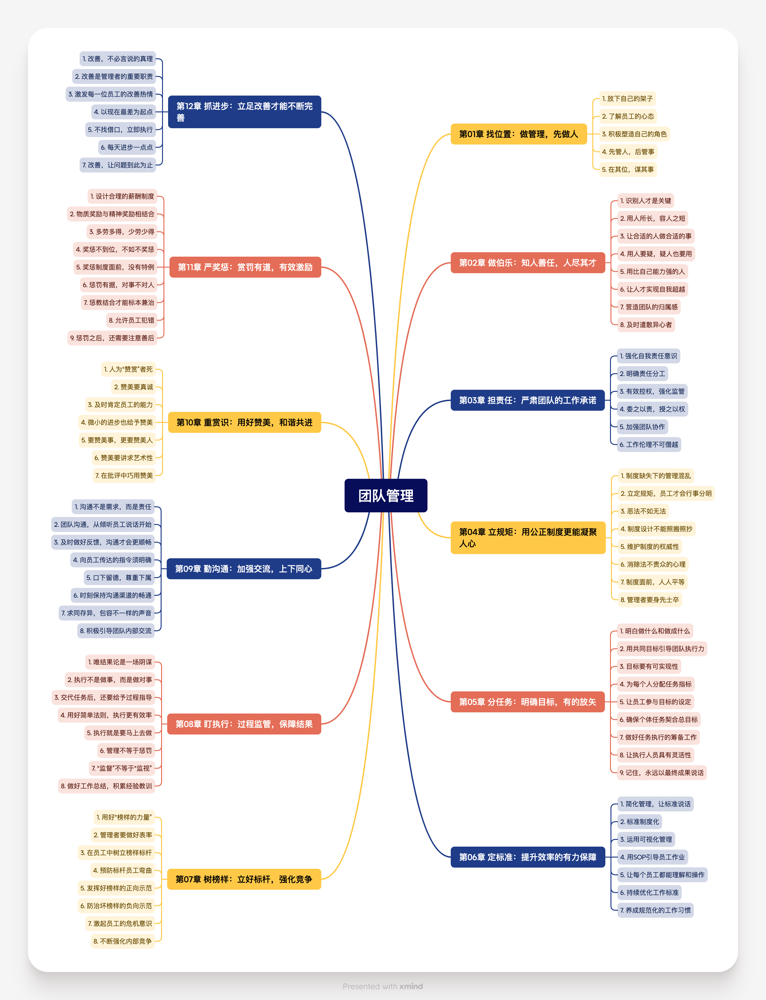

读书笔记 - 《团队管理》精华摘要
前言和近况
前段时间读了几本书，其中有一本《团队管理》，阅读后感觉内容中肯客观，现分享给诸位。
在上家公司离开前，从同事那学到了在图书馆网络借书的方法，家旁边就有图书馆，相当地方便。
来到新公司两月有余，少了蝇营狗苟，能接触到更有趣且有挑战的事务。
宝宝各项体检都正常了，悬着的心定了。
未来会继续输出博客内容。
阅读总结
全书核心观点总结整理如下。
- 管理者应具备耐心与部下交流、指导的心态，避免以自我为中心、端架子、摆官腔，要调动下属积极性，赢得下属信任和尊重。
- 管理者需具备角色魅力和相应角色素质，如决策力、威信等，注意角色效应，将正确的人放在正确的位置上，避免管理不公正和缺乏信任与机会给予，防止角色意识不清导致团队成员责任感缺失和管理混乱。
- 管理者要学会辨识人才，避免晕轮效应，在选拔人才时识人看主流、依据岗位要求确定考核重点、合理设置考核权重。
- 用人要扬长避短，容人之短，了解员工长处与短处，将其放在合适岗位发挥潜能，同时避免用人不疑变成放任、疑人不用导致人才减少，要观其言、看其行，懂得欣赏和包容下属，提供新挑战开发人才潜能，及时遣散异心员工。
- 管理者要有自我责任意识，学会承担领导责任，权力有多大，责任就有多大，替下属承担责任目的是先平息“外患”，再解决“内部矛盾”，让下属明白自己是坚强后盾。
- 明确工作任务分配，细化工作任务，避免社会惰化，明确责任分工，实现“人人有事干，事事有人干”，并赋予员工相应权力，充分授权，信任员工，授权前做好准备工作，注意授权事项。
- 制度是团队管理的根本，合理的制度才能得到共鸣，管理者要培养员工规则意识，让制度融入团队文化，坚决维护规章制度，以公平原则处理员工违规行为。
- 明确工作目标，目标是团队成员努力的方向，合理设置目标，包括总目标与阶段性目标并存、与成员切身利益相关、高低度适宜，量化目标，让员工参与目标制定，注重团队总目标与个人任务的衔接，做好任务筹划，以结果为导向评价员工工作结果，注意评价要点。
- 明确岗位责任，避免推诿扯皮，授权后要适当控制和约束，进行授权监督，可通过工作日志和进度报告等方式，不能只看工作完成而忽视对工作过程的理解和掌握。
- 在团队管理中树立榜样标杆员工，评选优秀员工，注意树立不同层次、真实、近人情的榜样，引导员工正确对待榜样，在团队内部建立竞争机制，激发员工自我超越的欲望。
- 团队管理不能只重结果，轻视过程，领导者要端正态度、不过分“体谅”员工、及时评价员工工作效果，给予员工过程指导，包括做好指导分析、示范、让员工独立尝试、辅导及监控，注意“最后通牒效应”，明确“监督”与“监视”的区别，做好事后回顾总结经验教训。
- 沟通包括纵向和横向沟通，是团队管理的中心任务，管理者要及时反馈下属，保证指令明确完整，提供多种选择方案、掌握提问技巧、适当授权以达到更有效的沟通，保持沟通渠道畅通，容忍不同声音，鼓励员工发言交流。
- 赏识能满足人们渴望重视的潜在需要，赞美要适度，发自内心，能使员工感受到认可、润滑关系、促成积极自我认同，针对不同员工采用不同的赞美方式，批评前用赞美做前奏，批评后用赞美做尾声。
- 物质奖励和精神奖励结合，设计富有吸引力的薪酬体系，明确“多劳多得”中的“劳”是“功劳”而非“苦劳”，奖要奖出斗志、业绩，罚要罚掉惰性、坏习惯，侧重点在员工行为上，将惩罚与教育相结合，把握好惩罚分寸，做好善后工作。
- 管理者要推进“改善”，善于发现问题并持续改善，认识到“改善”的目的和难点，避免急于求成，从点滴积累进步，成功源于积累。
内容摘要
全书章节目录如下：

各章节中精彩内容摘录如下，建议有兴趣的读者阅读原本。
第01章 找位置：做管理，先做人
一些刚做管理工作的人容易犯一个认识上的错误，即错误地认为管理工作就只是指挥，就是“指使”，这种认知在官本位意识形态严重的环境中更容易滋生，管理者在这方面所犯的错误也屡见不鲜。
一名优秀的管理者需要这样一种心态：他能够耐心地与部下交流问题，在部下碰到困难的时候，也能够耐心地给予指导，或者至少一起想办法克服困难。只有当一名管理者具备这样的心态，他才能够真正地赢得部下的信任和尊重。
管理是一个用心的过程，也是一次做人的演练。
即使我们懂得了在领导一个新团队时如何摆正自己的位置，但由于人性的天然缺陷，我们常常还是喜欢以自我为中心，喜欢指手画脚，更喜欢处处显示自己的重要性，这种人性的弱点在心理学上是有研究的。
基洛维奇的结论就是：我们每个人都会以自我为中心，觉得自己就是最重要的那个人。这种虚荣心态是自然而然的，其实也不算坏。可很多管理者为了满足自己的这点虚荣……
领导也好、干部也好、管理者也好，都是需要调动下属积极性的人，而这种端架子、摆官腔所追求的那种东西其实是没分清本末。得到了权力，却失去了人心，最终导致团队的凝聚力和执行力下降。
员工不服你，说明你不够有威信，有分量。归根到底，问题还是出在你的身上。
角色是指一个人在特定的社会和团体中占有的某一特殊位置，以及被社会和团体规定了的行为模式。
如果团队成员不服从管理，答案就是，管理者的角色塑造并不成功。说白了，就是员工不觉得你像个管理者。
管理者会缺少角色魅力，是因为不具备相应的角色素质，如决策力、威信等。想让他人信服，首先就要有令人信服的理由。
在团队中，管理者要注意角色效应，在赋予成员角色时，要符合其个性特征和能力水平。管理者赋予成员什么样的角色，将决定成员向着什么样的方向发展。
从管理者角色塑造不成功的角度上来看，主要存在以下两大原因。 1.员工认为管理不公正。 2.缺乏信任与机会给予。
员工认为管理不公正,很容易出现不接受工作安排等情况。
为了强化自己的主管角色，让团队成员服从自己，最终打造出凝聚力、执行力较强的优秀团队，新任管理者必须懂得适时释放自己的信任，给予团队成员表现自我的机会。
弗格特是一家私人电脑公司的经理，他每天要应付成百份的文件，这还不包括临时得到的诸如海外传真送来的最新商业信息。
......
结果弗格特成为真正意义上的“管家婆”，而非管理者。实际上，举重若轻才是管理者正确的工作方式，举轻若重只会让他越陷越深，把时间和精力浪费在许多毫无价值的事务上面。这样的领导方式，根本无法带动并推动团队的健康发展。
2000多年前孔子提出一国之君要“有所为”“有所不为”。 在团队管理中，一些管理者常常陷入一种“事事不放心，事事都去管”的管理陷阱中，这种“不在其位而谋其事”对团队管理造成很大的危害，制约着团队功效的正常发挥。
角色意识不清是众多新任管理者常犯的毛病，也是导致团队成员责任感缺失以及管理混乱的根源所在。 只有把正确的人放到正确的岗位上，同时赋予合理的责权关系，才能引导团队进行有效协作.
了解团队成员的能力状态，明确团队成员的角色关系，将正确的人放在正确的位置上是主管人员做好管理工作的前提。
否则，不合理的岗位安排必然会引起员工的不满以及管理上的混乱和低效。
第02章 做伯乐：知人善任，人尽其才
带领一个新团队，管理者想要选好人才、用好人才，首先要学会辨识人才。
戴恩的研究表明，如果一个人某些方面很优秀，自然他的其他方面也会被误认为很优秀，即一个人往往以对某人的最初印象来评价他。这就是心理学中的晕轮效应。
管理者在选拔人才时坚持德才兼备，唯贤是举是十分正确的。但也需要明白的是，有高峰就必定有深谷，谁也不可能是通晓所有的全才。 对此，管理者在选拔人才时，需把握好如下三个要点。
- 第一，识人看主流。识人切忌求全责备，而看其本质，看主流，据此来对应聘者做出总体评价。
- 第二，依据岗位要求，确定考核重点。企业需要的是最合适的人，而不是“完美”的人。
- 第三，合理设置考核权重。针对面试考核的项目，企业需根据拟招聘岗位的要求，对各个项目设置相应的权重。
管理者不仅要学会运用员工的长处，更要具备宽容的度量，能“容人之短”，这是团队管理用人决策的关键准则。
“用人所长，容人之短”这一准则要求团队管理者要知晓每一位员工的长处与短处，全面了解员工的才能水平、适合何种岗位、在哪些方面有很大潜能、在哪些方面不足等。
只有将员工放到了合适的岗位上，让他们做适合的事情，他们的潜能才能得到真正的发挥。
团队管理中常见的思维是“用人不疑，疑人不用”，提倡放手让员工去大胆尝试，不要什么都管。 在团队管理中，用人不疑，可能会把信任变成放任；疑人不用，可能会使团队中的人才越来越少。
在任用人才时，管理者不但要观其言，还要看其行。
让每个人都能做出成绩，充分发挥出自己的才能，还需要管理者具有较高的管理格局，懂得欣赏和包容自己的下属。
如果管理者因担心下属比自己强，威胁到了自己的地位，就处处打击压制，对下属的升迁进行阻挠和破坏，那就大错特错了。
人才的成长不仅需要主观的努力，也需要客观环境的推动。
心理学上有一个“泡菜效应”，是说一个人在一个环境中待久了，就会被同化。
管理者不要让人才停留在他已经干得非常漂亮的工作上，而是应该提供新的挑战，开发人才更大的潜能。
要提高员工的能力，首先，用压力激发动力。其次，给予合理的引导。
如果员工长时间得不到管理者的关注与认可，他可能就感觉郁郁不得志，最终选择离开。
一个再优秀的团队，也免不了有异心员工的存在。这类员工或许有点才能，但他们往往会因为个人利益而忘掉了团队的战略目标。对于团队中的异心员工，管理者要及时遣散，避免团队中出现烂苹果效应。
第03章 担责任：严肃团队的工作承诺
很多管理者，特别是管理经验不太丰富的初任主管，往往会陷入这样一个误区：当自己的团队成员犯了错，他们不懂得与员工一起去承担责任。他们总认为：“既然是他自己犯的错误，他一定要独立承担责任，作为管理者，我没有责任。”
管理者不等于高高在上，必须要有自我责任意识，学会承担领导责任，权力有多大，责任就有多大。
替下属承担责任并非是毫无原则的，其目的是先平息“外患”，再与下属共同解决“内部矛盾”。
如果下属有委屈，应当适当地安慰他；如果是下属一时疏忽，应告诉他错在哪里，并及时提醒他必须全神贯注地工作；如果是下属长时间不良的工作习惯造成的过失，就必须严厉地批评或是采取相应的惩罚。 不过无论是哪种情况，都应当让下属明白，你是他们坚强的后盾。
在带领团队时，工作任务要分配明确，让员工明白自己该干什么，负责什么，这样工作才能有条不紊地进行。
心理学家认为，之所以会出现社会惰化是由于在团体中，人们觉得自己的存在不易引起别人的注意，责任感会被模糊，个体焦虑降低，约束力下降。就是在责任分散的状态下，因为无迹可寻，人们会将责任推诿给他人。
管理者在安排员工任务时，一定要细化工作任务，明确责任分工，这样才能真正实现“人人有事干，事事有人干”。
在团队管理中，明确分工并不是把团队中的成员分解成单独的个体，而是为了更好地进行团队协作，让团队变成一个构造严密的整体。I
管理者给每一位团队成员都委任了一定的职责，也应赋予其相应的权力。
授权意味着激励员工承担更多的责任，拥有更多自行决策的权力。而信任是授权的前提，只有充分的信任员工，才有充分的授权。
真正意义的授权是在明确了责任之后，要信任他们、放心让他们去承担任务，信任是有效授权的关键。
充分的授权，意味着管理者相信员工的判断力和处理问题的能力，而信任是对员工的智能和创造力的肯定。
管理者在对员工实施授权前，应该注意以下事项：
- 第一，管理者不要将授权和“懒得工作”混为一谈。管理者需要明白哪些职权可以下放，哪些工作需要亲力亲为。
- 第二，管理者不要随便对那些“志同道合”的人授权。管理者要学会大胆启用跟自己唱反调的员工。
- 第三，管理者对员工进行授权时，不能凭个人的主观臆断来决定被授权者。而是要与公司的高层员工协商确定被授权者人选。
授权前，管理者需要做好以下准备工作。
- （1）打消授权的担忧。
- （2）提前做好授权计划。管理者要提前做好计划，以帮助自己明确授权的相关细节、授权的程序与步骤、每个步骤的要点，这样管理者才能对授权结果进行预测。
- （3）在授权之前管理者需要将每个人的责任具体化。
- （4）对被授权者讲出自己的期望。这些期望包括：他们需要完成哪些事情、应该在什么时间完成、需要做到什么程度等。
- （5）提前了解员工在执行方面的困难，在员工授权前，要充分了解员工所面临的困难，继而为员工提供相关的帮助。这样做，就可以帮助员工减少碰壁的次数。
- （6）做好接受员工使用他们各自工作方式的心理准备。
（3）特例处理。当作特例处理的基本想法是：只有偏离了过去制定的标准时，才需要特例处理的控制系统。
就本质而言，特例处理并不是让下属全盘说出任务的进度，只是要他告知意想不到或不寻常的进展。这种方式可以使管理者花最少的时间和精力去控制一项工作。
统计控制报告。统计控制报告所呈现的资料是将与自己类似的组织、自己的经营成果相比较，管理者可以用报告的指标作为评估经营成果的标准。为了让任务进行得更有效率，如有需要，也可以实行新的评估方法或变更标准。
（5）历史比较法。与统计控制报告相似，历史比较法是将员工过去相关的表现加以比较。历史的轨迹可以帮助企业领导看到过去成果的周期，而预估到想要的成果标准。
身处职场，我们做事情却不能随心所欲，完全放任自由，团队中存在着不可僭越的工作伦理。
每个人承担的责任不同，就意味着我们必须在相应的职责范围内行事，这也是对自我责任担当的体现。
团队和员工不论自己的地位如何，不论自身的条件如何，都在求得一个发展；在自身原有的基础上，获得发展。寻求自身的发展，是不同团队、不同员工，在价值取向上的共同追求，即共识。
怎样才能让团队成员达成共识，首先，要制定出符合团队实际的发展战略。其次，与员工组成利益共同体。
第04章 立规矩：用公正制度更能凝聚人心
一个有效的团队必须形成一股强大的组织力，只有在组织力的作用下，团队的效能才能得以发挥。但组织力从哪里来？这就要依赖于制度。团队是一个组织，组织的秩序也必须依赖制度来维护。
制度是团队管理的根本，没有制度，团队就没有运行的准则，就不能保证团队的运作保持在正确的航道上。管理 制度很重要，制度的合理性更重要，不合理的制度永远得不到共鸣。
任何一个团队的成功并不是人人都可以唱得很好的“样板戏”，机械照搬、模仿只会耗费有限的资源。
行为心理学家在研究中发现，在一个群体中，当其中一个人打破群体中的一项规则时，就会有更多的人接二连三地打破这项规则。这种现象，被称为“破窗效应”。
“法不责众”成了一块盾牌，成为某些别有用心之人的保护伞。
要处理，但是处理的方法有讲究。带头闹事的人，恐怕就是利用管理者的维稳心态。但团队管理者应该知道，规章制度才是团队稳定的根本，所以必须坚决维护。管理者正确处理员工违规行为的首要原则就是公平原则。
规则是制定出来的，但规则的意识是培养出来的。
很多团队管理者有一个误区：他们制定了严格的规章制度，这也限定，那也限定，但效果非常有限。原因何在？再严格的制度，只要员工没有规则意识，他们仍然能够想尽一切办法来钻规章制度中的漏洞或者投机。所以，管理者开始严肃处罚，希望借此来重塑风气。这不是规制，这是强权。
带领一个团队时，管理者首先要摆正心态：团队管理要的不是强权统治，而是规则意识。管理者需要做的是培养员工的规则意识，让制度融入团队文化。
第05章 分任务：明确目标，有的放矢
目标是指引团队成员努力的方向，如果搞不清工作的目标，执行力越强，在错误的方向上走得越远。
很多情况下，团队之所以浑浑噩噩、停滞不前，不是成员的能力不够，而是组织制定的目标不明确，员工不知道该往哪个方向走。只有明确的工作目标才能有好的执行力，能打造高效的团队。团队成功的核心就在于全体成员对目标达成“意见一致性”。
诚然，有宏伟的目标是好的，但是如果目标太宏伟以至于不能实现，那么再美好的目标都只能是“每年在动员会上喊的口号”罢了。
为团队设置合理目标，应该注意以下几点:
- 第一，总目标要与阶段性目标并存。
- 第二，目标要与团队成员的切身利益相关。
- 第三，目标的高低度要适宜。
量化目标就是为每个人分配任务指标。把具体目标定量化，把一个大目标分解成数个小目标，然后明确到每个人身上。将目标进行量化意识，如今已经得到了很多团队管理者的认可。
让员工参与目标的制定。这样做既能调动员工的工作热情，也能让他们完成任务的责任心更强。
团队管理者的本职工作就是带领其团队，做好自己本职领域的工作。 这种职能分割的初衷也是在避免团队内部人员之间遇到问题就推卸责任的问题，力求使各项工作都可以有确定的责任人。
在一个团队中，如果每个人都只专注于个人任务的完成，而忽略了个人任务与团队总目标的衔接，那么个人任务做得再好也不能保证总目标的实现。作为管理者，应该让团队的每一个成员明白，做好本职工作是远远不够的。
团队的目标是追求理想的绩效。要实现这个目标，团队必须进行有效的任务筹划。
管理者必须能够从战略角度为工作任务做好筹备，这样任务执行时才不会手忙脚乱。
国内很多团队管理者做不好这一环节，往往是在出现业务衔接很不顺畅时让一两个员工进行填补了事，从来不从工作整个程序上进行筹划。
注重管理行为的结果，但不要监控行为，让管理进入一种自我控制、自我管理的状态。
其实，每个员工都渴望得到上司的信任，并被赋予更多的权力。
顺利完成目标是团队最终的追求。但是，很多员工在达成目标的过程中，基于对如何完成工作的关切，使自己的心思渐渐被如何进展和解决这项工作的方法、技巧等占据，反倒忘了最初的目标追求。也就是说，“工作如何完成”逐渐代替了“工作完成了没有”。
成功的目标管理中，管理者必须确保让员工都知道自己应对什么成果负责，学会以结果为导向来引导员工的工作行为，如此方能坚持以整体成果为导向，也才能确保工作结果的有效性，
在对员工的工作结果进行科学评价之前，团队管理者需要注意以下几点。
- 管理者要合理制定考核标准。
- 确定好绩效考核关键的内容。
- 考核的过程一定要体现公平性。
第06章 定标准：提升效率的有力保障
如果将工作流程中的每个角色加以定位，那么最直接的生成物就是岗位。很多团队存在这样的现象：岗位责任不明确，员工推诿扯皮的现象时有发生。
如果员工长时间得不到管理者的关注与认可，他可能就感觉郁郁不得志，最终选择离开。
授权并不代表放手不管，授权之后如果不加以适当地控制和约束，就是对权力的放纵。管理学大师杜拉克说：“授权不等于放任，必要时要能够时时监控。”
授权之后，一定不能放松对权力下放后的跟进，要适当地控制，一旦需要对下属行为进行必要干涉时，管理者要果断出击，决不能姑息迁就，听之任之。
管理者对授权的工作做必要的监督查核是不可缺少的。通过监督查核，管理者不仅能知道工作的进展情况，而且能得到其他有用的信息，以更好地推动团队工作的进行。
管理者应如何进行授权监督呢？
- （1）工作日志。监督任务的第一个步骤是发展一套架构良好的工作日志。管理者与自己的组织成员需要一些系统以追踪什么样的任务已经分配出去、委托给谁，以及需要多长时间完成任务。
- （2）进度报告。进度或活动报告，对于追踪委托的任务非常有用。进度报告提供了另一种方法，让员工可以沟通问题并交流下一个步骤该如何进行。
不论工作难度多小，都不是单凭肉眼观察就可以完全被掌握的。看着一项工作被他人简单地完成了，这并不意味着自己也会同样简单地做好。
很多动作是难于模仿的，并且大部分人容易错过一些细枝末节。即使他们能够做、也确实在做那项工作，但往往也仅限于动作的模仿，并不能代表他们已经完全领会了那个动作的关键。
第07章 树榜样：立好标杆，强化竞争
当人们处在陌生情境，自然会向他人观摩学习。此时观看他人行为，只是想运用自己已学的既有行为，而不是对某一刺激做出的反应，如参加宴会时说些得体的话。榜样的力量是无穷的，一旦树立起好榜样，员工自然会观察模仿，学习优秀的行为。
在团队管理中，树立榜样标杆员工的最好方法就是评选优秀员工。
团队管理者在树立员工榜样要注意以下几点。
- 第一，要树立不同层次的榜样。团队是复杂的，员工的成长道路也是多种多样的。树立榜样，不能搞“一枝独秀”，而应搞“群芳谱”。
- 第二，要树立真实的榜样。榜样的力量在于真实。树立真榜样，不能虚构先进事迹，不能任意拔高，不能一好百好。
- 第三，树立榜样要近人情，树立榜样是为了让员工去学，为了让人学，就要使得他们“能够学”。
- 第四，引导员工正确对待榜样。
人都有争强好胜的心理。 在团队内部建立竞争机制，是一种积极的、健康的、向上的引导和激励。 每个人都有竞争心，都有不服输的竞争意识。虽然这不容易在表面上表现出来，但人人心中总潜伏着一份竞争意识。人们潜在的心理都希望“站在比别人更有优势的地位上”或“自己被当成重要的人物”。从心理学角度讲，这种潜在心理就是自我超越的欲望。
第08章 盯执行：过程监管，保障结果
很多管理者在执行任务时有这样一种思维：只要结果，不看过程。其实，团队管理中的唯结果意识就是威权管理下的一场阴谋。
只重结果，轻视过程，会让团队滑向“为达目的，不择手段”的深渊。 把事做完只是领导者对员工的基本要求，能把事情做好才是领导者对员工的期待。 管理一个团队也是如此，即便是员工达不成最好的结果，也要让他努力到最后，给自己，也是给团队一个交代。
- 首先，领导者要端正工作态度，认真对待自己的本职工作，给自的员工做好表率。
- 其次，领导者不能对自己的员工太过“体谅”，这种“体谅”实际上是对员工的不负责，间接浪费了员工的价值。
- 最后，就是及时对员工的工作效果进行评价，指出员工的工作偏差。
分配完一项工作任务后，如果你不能清晰地了解员工是否理解你的意图，需要什么样的帮助，你又怎能指望他们按照你的思路准确地工作呢？ 管理者想要员工把事做好，在向员工分配一项新任务后，就应该主动了解他们的技能水平，根据实际情况，运用合理的工作指导方法，展示工作中的关键细节，这样才能够保证员工理解工作重点，掌握工作技能，从而准确、高效地执行工作。
因此，团队管理者不但要“告诉”员工做什么，还要“教”员工如何做，给予员工过程指导，以提升员工的执行力。具体可按下面的指导步骤进行。
- （1）做好指导分析工作，从整体上让员工了解将会有什么样的操作步骤。
- （2）向员工示范，展示过程中要清楚地告诉员工操作过程中的重点、难点以及操作技巧，力求让员工理解到位。
- （3）让员工独立尝试。示范完成之后一定要让员工独立地操作一遍，不便现场操作的需要复述一遍完整的工作步骤和要点，保证不会出现纰漏。
- （4）辅导及监控员工的工作效果。团队管理者要及时监控员工的工作效果，如有不正确的地方应及时纠正。 防呆技术是简单化、标准化的最高表现形式。所谓“防呆”，就是防止呆笨的人做错事。
生活中，许多人都有这样的心理特点：对于不需要马上完成的任务，习惯于在最后期限即将到来时才去努力完成。这在心理学上叫做“最后通牒效应”，表现为人们对于不需要马上完成的任务，往往是在最后期限即将到来的时候才努力完成。
心理专家指出：在超高压力下，人们的表现只会更糟，而不会更好。
团队管理者无法避免这样一个事实：在工作执行过程中，员工会出现失败，最终完不成工作任务。当员工不能够实现由管理者定下的工作目标时，管理者一般会通过扣薪的方式来对员工实施惩罚。 管理者在实行监督过程中，要明确“监督”与“监视”的区别，“监督”不等于“监视”。毕竟，没有任何一个人希望自己被人“监视”。 被人监视包含着两层意思：
- 一是，我对你不信任，所以我要监视你；
- 二是，你的行为要受到我的管束。
员工本身是有惰性的，如果管理者对员工的工作不进行任何监督，那么就会使员工放任自流，缺乏工作效率。 监督”对于工作经验缺乏、新入职场的人比较有必要，但对于职业目标明确、工作经验丰富的员工来说，作用不大。
事后回顾即AAR（After Action Review），又称行动后反思，是指通过对终结项目的学习，发现不足和优点，应用到接下来的工作当中。 如果我们不对工作进行总结，那就是“风过了无痕”，仅仅是一个又一个工作的完成，却得不到学习的机会，无法取得长足的进步。 事后回顾法遵循以下步骤。
- （1）反思当初行动的意图或目的是什么？当初行动时尝试达成什么目标？
- （2）实际执行过程中发生了什么事？为什么会发生？怎么发生的？
- （3）我们能够从本次执行过程中学到什么新的东西？若是有人要进行同样的工作，我们能给出什么样的建议？（4）接下来我们要做什么？哪些是我们可以直接行动的？
- （5）采取行动，将学到的知识用到行动中。
- （6）注意分享，把有用的知识有效地传递给其他需要的人或组织。
作为团队管理者，要始终谨记：任务的完成不是工作执行的最终结果。工作任务完成后，要做好工作总结，积累经验教训，为以后的工作做好借鉴。
第09章 勤沟通：加强交流，上下同心
在团队中，沟通是多方面的，包括纵向沟通和横向沟通。纵向沟通是指上下级之间的沟通，其是团队管理工作中的一项中心任务。
管理者往往只把沟通当成由上而下的意向传达。这是不可能真正做到相互沟通的。
横向沟通指的是团队成员之间的相互交流。有效的横向沟通有利于团队内部的横向协作配合。
管理者要对下属的话语及表现进行及时的反馈，让他感到自己的努力没有白费。如果你不能给下属以鼓励和表扬，即便是两句批评也会比漠然视之要好得多。
管理者向员工传递及时的反馈，并不仅仅是沟通过程中的需要，更是管理活动必不可缺的一个环节。
管理者在向下属传达指令时，如果不能保证指令的明确、完整，往往会导致下属无法理解任务的真正意图，从而造成工作延误，甚至造成更大的损失。这样的沟通百害而无一利。
如何才能让员工感受到管理者给予的选择机会，从而达到更有效的沟通呢？
- （1）管理者应尽可能为员工提供多种选择方案。管理者需要依据部门内的工作要求，将需要分配的具体任务切割成相联系的选项，让员工从中选择。
- （2）管理者要掌握提问的要诀和技巧。巧妙地安排问题的表述方式和顺序排列，有意识地将想要员工做出的选择摆在后面的位置，最大化获得期望目标。
- （3）管理者要适当授权，并对员工提出工作期望。管理者交代清楚任务的具体细节后，就要充分授权给员工，让员工放手去做事。管理者只需在一旁监督，并对最终的完成效果进行评估即可。
在心理学中，被人尊重是一个人基本的心理需要之一。平时的生活中，我们也可以看到很多这样的例子：一个人可以为了自己的尊严舍弃很多东西，甚至不吝惜自己的生命。
在团队管理中，管理者不仅要加强团队成员的沟通交流，还要时刻保持沟通渠道的畅通。 团队沟通中，管理者需抱有宽容的态度，容忍不同的声音，倾听不同的意见和想法，同时鼓励员工大胆发言，多做交流。 在管理沟通中，管理者最大的忌讳就是刚愎自用，连一点反对的声音都听不得。长此以往，管理者“独揽大权”，高高在上，却也是管理陷入狭隘的重要原因。
当员工提出某个管理者不甚赞同的观点时，管理者不要一口就否决它，可以试着问他“你可以详细阐述你的观点吗？”之类的问题，这样不至于让对方下不来台，交流的气氛也会平和许多。
第10章 重赏识：用好赞美，和谐共进
每个人都希望自己能得到他人的赏识，赏识是一种有力的心理暗示，能够满足人们渴望重视的潜在需要。
赞美是一种心态，是关爱、欣赏、培养员工的心态。然而，想要恰当地赞美别人并不是一件容易的事。如果团队管理者只是因为听别人说赞美重要，便对自己的员工实施嘴皮上的赞美，内心深处对员工没有一点欣赏的话，这样的赞美，只会让员工觉得你这位领导者虚伪，甚至员工还会因此讨厌你。
赞美要适度。赞美的确能振奋人心，但赞美并不是多多益善，没有限制的。赞扬要适度，赞扬的员工数量不宜过多，这样会降低表扬的效力，也不宜过少，那样会使员工觉得自己再怎么努力也达不到。
赞赏对员工的能力到底有哪些作用呢？
- （1）使员工感受到认可。
- （2）润滑管理者与员工的关系。
- （3）促成员工积极的自我认同。
对于优秀的员工，当他们的表现越来越突出时，要加倍肯定，并激励他不断超越自己； 针对一般员工，在某一具体工作上中取得一定程度的进步时，必须在第一时间进行表扬； 针对那些基础较差的员工，管理者要善于发现他身上的“闪光点”，哪怕是一丁点的光亮，也要用放大镜来“看”，并且告知这类员工，他们在公司有着很重要的作用。
批评之前的赞美很容易满足对方的自尊心，如同在“良药”之外包裹了一层糖衣，能让对方顺着你的想法接受你的劝说内容。
用赞美作为批评的前奏，可以减少下属的负面情绪，用赞美作为批评的尾声，可以抚慰下属受伤的心灵，以良好的情绪回到工作之中。懂得赞美与批评的技巧，能让团队在和谐的氛围中不断前进。
第11章 严奖惩：赏罚有道，有效激励
物质奖励对员工的激励作用是显而易见的，而物质激励有赖于薪酬制度的制定，合理的薪酬制度能有效地激发员工活力，调动员工的工作积极性。所以，团队管理者想要利用好物质激励因素，就要设计一套富有吸引力的薪酬体系。 对于尚处于较低需求层次的员工来说，物质奖励是一种有效激发员工工作积极性的方式。而对于那些生活条件较好，对金钱和物质的需求较低的员工来说，物质奖励的作用就没那么明显了，这时候管理者要学会利用精神奖励。 荣誉激励法，就是根据员工希望得到团队尊重的心理预期，给那些对团队作出突出贡献的人一定的荣誉，并将这种荣誉以一定的形式固定下来。
有一点需要明确，“多劳多得，少劳少得，不劳不得”的奖励制度中，“劳”并非“苦劳”，而是“功劳”。一些员工常常以“没有功劳也有苦劳”为理由，期望得到更多的回报。虽然员工付出了汗水，但没有绩效的辛苦只不过是无用功。
在团队管理中，管理者既要舍得奖，也要敢于罚。奖要奖得心花怒放，奖出斗志、奖出士气、奖出业绩；罚也要罚得胆战心惊，罚掉惰性、罚掉坏习惯。 管理者在惩罚员工时，一定要把侧重点放在员工的行为上，不要凸显员工的品性。让其他员工意识到只要自己也有这种行为，就会受到相应的奖惩，这些行为才是惩罚的依据。
管理者必须明白这一个道理：教育才是最终目的，惩罚只不过是手段。
管理者应该将惩罚员工错误与教育员工改正错误相结合，具体可参考如下四个要点。
- （1）允许员工犯错，在团队管理及其员工成长的过程中，不免会有错误伴随。因此，要给员工犯错误的空间。但需要清晰界定出允许与不允许的范围。
- （2）当员工犯错后，要想方设法教育员工认识到错误，主动承认错误。
- （3）承认错误之后，关键还要让员工找到正确的途径，改进自己的错误，必要时各层管理人员需协助员工找出解决问题的办法。
- （4）惩罚适度。惩处过轻，起不到惩罚应有的警示作用；惩罚过严不光会挫伤员工的工作积极性，而且很可能导致人才的流失，跑到竞争对手那里去，弱己强敌。
凡事有度，过犹不及。尤其在惩罚员工一事上，管理者更要把握好分寸，下面几点建议或许能提供参考。
- 第一，惩罚要“有规可依”，即对于需要惩罚的行为和结果作出清晰的规定，在“度”的把握上才能做到合情合理。
- 第二，惩罚员工要尊重事实，认真调查，把事实弄清楚后再做处罚定论。
- 第三，惩罚员工后，一定要做好善后工作。例如，及时做被罚员工的思想工作，帮助他们认清错误本质，尽快地重塑被罚者的工作信心。
惩罚员工之后，要注意善后，这样会让员工体会到管理者的一片良苦用心，从而激发其自身以更饱满的热情对待今后的工作。
第12章 抓进步：立足改善才能不断完善
在改善过程中，管理者的地位和作用绝对不容小觑，整个改善活动的开展必须借力于管理者的主导和强力去推进。作为管理者本人，必须认识到：推进“改善”确确实实是自己的一项重要职责。
对于管理者来说，完成本职工作是起码的要求，但如果是一名优秀的管理者，那么他必须要善于发现问题并持续去改善问题。
“改善”的目的在于“改善”，难点在于“持续”.改善的效果和持久性往往跟人们的热情程度成正比。
美国通用电气公司前CEO杰克·韦尔奇曾经说过：“在工作中，每一个人都应该发挥自己最大的潜能，努力工作，而不是耗费时间去寻找借口。”
这句话中体现了三层含义：
- 一是寻找借口反映了行为者本身的能力不足。
- 二是寻找借口会造成工作时间的浪费。
- 三是寻找借口无助于满足团队的需要。
在团队管理中，急于求成的心态不可取，它会让人迷失在速度的漩涡中。我们要一点一滴地积累实力，慢慢地成长，进而壮大。成功源于积累。只有从小处着手，不断积累一点一滴的进步，当积累达到一定程度后，便会出现质变，达到成功的境界。